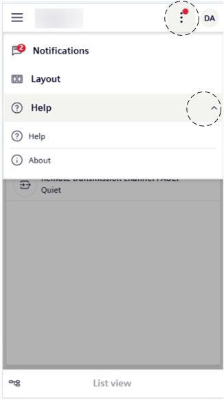

View Flex Help and About Info
- Tap .
- Tap Help.

- Proceed as described at step 2 in View Software Information.
NOTE: Flex online help does not open on your mobile device in Safari browser, because of blocked pop-ups. You must manually turn off the pop up blocker:
- Tap Settings.
- Tap Safari.
- Under General, turn off Block Pop-ups.